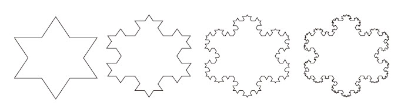

奥尔多·利奥波德
生态学家
如果土壤有机质作为一个整体是良好的，那么每个部分都是好的，不管你是否理解；如果生物圈在演进的过程中，已经建立了我们喜欢但不了解的东西，那么只有傻瓜才会丢弃那些看似无用的部件。一个精明的钳工，首先想到的是确保每一个齿轮和车轴都完好无损。
我们在第2章中介绍了几种简单的系统，它们有着不同的结构，因而呈现出不同的行为模式。其中有一些系统是非常优雅的，即使受到各种限制，依然在这个充满斗争的世界中顽强地生存着，保持着它们的从容与淡定，执著地从事着它们的工作，包括保持室温的稳定、开采油田，或者在渔业资源和船队规模之间保持平衡等。
如果受到太大的冲击，系统可能会四分五裂，或表现出我们未曾见过的行为。但是，在很大程度上，它们都应对得很好。这就是系统之美：它们运作得如此精妙，各种机能和谐运行。想象一下，一个社区在应对风暴时的景象，人们争分夺秒地救助受难者，各种智慧和技能都涌现出来，如同一个上足了发条、高速运转的机器。等灾情过后，一切又恢复如常。
为什么系统会运作得如此精妙？请选定一个你所熟悉的高效运作的系统，比如一台机器、一个社区或者生态系统，并认真观察。幸运的话，你可能会看到以下三个特征中的一个或几个：适应力、自组织和层次性。
生态学家 霍林
如果系统被一大堆常数所禁锢，它就很难成长和进化。
“适应力”（Resilience）在工程学、生态学或系统科学领域有很多种定义。基于人们的目的不同，常见的字面意思也有差异。
●如果形容一个物体，适应力指的是其在被按压或拉伸之后，能够恢复到原有形状、位置的能力；
●如果形容一个人，适应力指的是他快速恢复的能力，包括力量、精神、幽默感或其他方面；
●如果形容一个系统，适应力指的是系统在多变的环境中保持自身的存在和运作的能力。与适应力相对的是脆弱性或刚性。
系统之思
系统之所以会有适应力，是因为系统内部结构存在很多相互影响的反馈回路，正是这些回路相互支撑，即使在系统遭受巨大的扰动时，仍然能够以多种不同的方式使系统恢复至原有状态。
我们知道，一个单一的调节回路会驱动系统存量到达预定的状态，对于存在多个类似回路的系统来说，就会显现出适应力，因为这些回路以不同的传导机制起作用，有不同的时间周期，也存在一定冗余——如果其中一种机制失效了，另外一种就可以补位。
如果有一组反馈回路，可以修复或重建反馈回路，系统的适应力就比较强，也可称为“元适应力”（meta-resilience）。由具有更高适应力的反馈回路组成的“元元适应力”（metameta-resilience），往往具有更加复杂的系统结构，有更强的复原能力，可以学习、创造、设计和进化。这类系统具有很强的自组织性，也是系统的基本特征之一。
系统之思
适应力总是有限度的。有适应力的系统可能是经常动态变化的。相反，一直保持恒定的系统恰恰是不具备适应力的。
人体就是一个令人称奇的、具有很强适应力的系统。它可以抵御成千上万种病毒、细菌等有害物质的入侵，可以适应各种不同的温度以及差异很大的食物，可以根据需要调整血液供应，可以修补、愈合创伤，可以加快或减慢新陈代谢速度，甚至可以在一些器官受损或缺失的情况下做出适当的调整或补偿。在自组织系统的基础上增加智能性，就可以实现学习、交际、设计等过程；再加上器官移植技术，我们就可以极大地提高人体的适应能力。当然，这不是无限的，因为至少从现在看来，无论是人体自身还是智慧，都无法长生不老，任何人或器官最终都难逃死亡的宿命。
生态系统也具有相当强的适应力，多个物种相互依存，在同一片蓝天下迁徙，随着天气的变化、食物的丰俭以及人类活动的影响而繁衍兴旺或衰败消亡。由于很多种群和整个生态系统具有令人难以置信的丰富基因及变异能力，它们也具备“学习”和进化能力。如果时间足够久，它们就可以塑造出一个全新的系统，以充分利用各种变动的机会，获得生存和发展。
适应力与一直保持静止或恒定是不同的。有适应力的系统可能是经常动态变化的。事实上，短期的振荡、阶段性的发作，或者周期性的兴衰、高潮与崩溃，都是正常状况，而适应力可以使其复原。
相反，一直保持恒定的系统恰恰是不具备适应力的。因此，区分静态的稳定和适应力非常重要。静态的稳定很容易被观察，它是以一定周期内系统状况的变动来衡量的；而适应力则很难被观察到。除非超出了限度、调节回路受到冲击或破坏，或者系统结构被分解，否则你很难了解适应力是如何产生和运作的。如果没有完整的系统视角，人们看到的就只是系统表面呈现出来的动态或静态，而不是适应力。实际上，人们经常为了稳定或者提高生产率等目的而牺牲系统的适应力，有时候也可能会为了其他一些更容易被识别的系统特性而破坏系统的适应力。
●给奶牛注射转基因的延缓生长激素可增加牛奶的产量，却不会相应地增加奶牛的食物摄入量。该激素可以将奶牛其他一部分身体机能的新陈代谢能量转化为产奶。虽然这样做可以增产，但其代价是降低了奶牛的适应力，使奶牛的健康状况恶化，寿命缩短，更加依赖于人类的管理。
●近年来一些企业推行出了“及时生产”（Just-in-time）模式，不管是部件到制造商，还是产品到零售商，都降低了库存的波动性，减少了成本。然而，这种模式也使生产系统更加脆弱，容易受到燃料供应、交通流量、计算机瘫痪、劳动力短缺或其他阻碍的影响。
●在欧洲，数百年来对森林的严格管理，已经逐渐将自然的原生林替换为单一树龄、单一树种的人工林，有的甚至大多不是本地树种。这样的森林管理模式可以产出更多更适合制造纸浆的木材。但由于缺乏多个物种之间的相互作用、交替荣枯，容易导致土壤的贫瘠，并且更加容易受到病虫的危害，从而使得森林更为脆弱。此外，它们似乎对一种新的侵害更为敏感，那就是：人类工业或生产活动造成的空气污染。
对于人类来说，很多慢性疾病，如癌症、心脏病等，都源自人体适应力机制的崩溃，这类机制可以修复DNA、保持血管的弹性，或者控制细胞分裂。对于生态系统来说，很多生态灾难的发生也是因为适应力的丧失，例如一些物种的消失、土壤生化机制的破坏或者毒素的积累等。同样，各类大型组织（如企业、政府等）适应力的丧失，也是因为其对环境的感知和响应机制、反馈过程过于冗长、低效，要么存在很多层级，要么有很长的时间延迟或信息失真。稍后，我们会在讨论组织层级时对此进行探讨。
系统之思
不能只是关注系统的生产率或稳定性，也要重视其适应力，即自我修复或复位的能力，战胜干扰、恢复机能的能力。
我认为，适应力是系统运作的一个基础，正是因为适应力的存在，系统才可以正常地发挥和维持各种功能。因此，一个有适应力的系统就是一个大平台，在该平台支撑起来的空间里，系统可以自由地驰骋，一旦接近危险的边缘，就会遇到一堵柔软的、有弹力的“墙”将其反弹回来。随着系统适应力的下降，支撑的平台就会变小，那道保护墙也会变矮、变硬，直到系统如同运行在刀尖上，只要有一点震动，就随时可能坠落。因为人们通常更加关注系统是如何运作的，而忽视了其运作的空间，所以，在一般人看来，适应力的丧失似乎是突然来临的，是一种意外。但是，在此之前，系统其实早已是千疮百孔了。
当你认识到了适应力的重要性，你会找到很多方法去保持或增强系统自身的康复能力。
例如，在自然的生态系统中就蕴藏着这种认识，所以捕食者可以有效地控制害虫的数量；在和谐的养生保健生活方式中也体现了这样的认识，所以人们不只是有了疾病再去治疗，而是会增强人体自身的免疫力；同样，在积极的救援项目中也包含了这样的认识，所以救援者不只是简单地提供食物或金钱，而是努力创造条件，让人们可以自给自足，正所谓“授之以鱼，不如授之以渔”。
生物学家 路德维格·冯·贝塔朗菲
进化看起来并不是只由环境变化所引起的、贯穿于物种诞生和整个生存历程的一系列意外事件，而是有一定规则的未来；揭示这些规则将是人类最重要的任务之一。
一些复杂系统最令人称奇的特征，就是它们具有学习、多元化、复杂化和进化的能力。依靠这种能力，单个受精卵经过不断生长、分化，最终演化成一只青蛙、兔子或者人，体现了令人难以置信的复杂性；依靠这种能力，大自然中的一捧泥土有机质也能生生不息，滋养着不计其数、多姿多彩的生命物种；依靠这种能力，人类社会从刀耕火种，进化到发明了蒸汽机、水泵、专业化分工、大规模流水线生产、摩天大楼，以及全球化的通信网络。
系统所具备的这种使其自身结构更为复杂化的能力，被称为“自组织”（self-organization）。无论是从一片雪花身上，还是窗户上的冰晶，或者是过饱和溶液的结晶体中，我们都可以看到简单的自组织的工作原理和机制；但是，大自然中还包含着一些更为复杂的自组织过程，比如一颗种子生根发芽，一个孩子学会讲话，或者一个社区里的居民自发地联合起来反对有害垃圾倾倒等。
对于一个有机系统而言，自组织是一个非常普遍的特性，以至于很多人认为这是理所当然的。否则，我们就有可能被周遭世界中纷繁复杂的系统搞得眼花缭乱。当然，如果我们能够对自组织特性引起重视，我们就将会更好地鼓励而非破坏系统的自组织能力。
与适应力相似，人们也经常会出于追求短期生产率和稳定性的目的而牺牲掉系统的自组织特性。例如，把人和其他有机系统当做机器和生产过程中的附属品；或者减少农作物的基因变异性；或者建立官僚政治或组织，将人等同于符号或数字。
自组织特性会产生出异质性和不可预测性：系统有可能演变成全新的结构，发展出全新的行为模式。它需要自由和试验，也需要一定程度的混乱。但是，这些状况可能令人恐慌，或者威胁到现有的权力结构。结果是，教育体系往往限制了儿童的创造力，而不是激发这种能力；经济政策往往倾向于支持现有的大企业，而不是鼓励创新型的创业企业；同时，很多政府倾向于管制人民，而不是允许人们自发地组织起来。
幸运的是，自组织作为有机系统的一个基本特性，对于大部分冲击力都有一定免疫力。尽管以法律和维持秩序的名义，自组织能被长期压制、残酷打压，但它不可能被彻底消灭，而会顽强地持续下去。
过去，一些系统理论研究者曾认为自组织是系统的一种复杂特性，不可能被完全理解，人们也曾运用计算机建模技术去仿真、模拟一些系统的行为，当然，这主要针对的是一些内在作用机理清晰、可以定量描述的系统，而不是一些可以进化的复杂动态系统，因为人们会主观地认为后者不易被理解。
然而，新的发现表明，仅用一些简单的组织原则，就可以引起非常多样化的自组织结构。
想象一下，一个等边三角形，在每一条边的中间增加另外一个等边三角形，其面积是前者的1/3；依此类推，得到的图形被称为“科赫雪花”（Koch snowflake，如图3—1所示）。它的边长很长，但可以被包围在一个圆形之中。这种结构只是分形几何学的一个简单范例，这是数学和艺术的一个交叉领域，它通常使用一些相对简单的规则来产生精美的形状。
类似地，基于一些简单的分形规则，使用计算机就可以生成各种精致、优美、复杂的类似蕨类植物的形状。同样，虽然单个受精卵细胞裂变、生长成人的过程非常复杂，但其中也可能包含一系列类似的、相对比较简单的几何规则。例如，在人体的肺部，肺细胞按照分形几何学的规则排列，所以，在有限的空间里，可以更大程度地扩展与空气的接触面积。事实上，如果把所有肺细胞展开的话，其表面积足以覆盖整个网球场。
图3—1 “科赫雪花”演变图
即使像“科赫雪花”这样精美、复杂的图形，也可以从一组简单的组织原则或决策规则演化而成。
由此可见，一些简单的组织规则就可以产生复杂的自组织系统，以下是其他一些例证：
系统之思
系统通常具有自组织的特性，具有塑造自身结构、生成新结构、学习、多样化和复杂化的能力。即使是非常复杂的自组织形式，也有可能产生于相对简单的组织规则。
●所有生命都是基于DNA、RNA和其他蛋白质分子等遗传机制中内含的基本组织规则繁衍生息的，从病毒到红树林，从变形虫到大象，均是如此；
●农业的发展和相关机制都始于一个简单的创意，即人类可以在一个地方定居下来，拥有土地，并选择和培育作物；
●“上帝创造了万物，大地居于它的中心；城堡位于大地的中心；教堂位于城堡的中心”——这是中世纪欧洲人眼中的社会和物理结构的组织原则。
现代科学证明，自组织系统可以产生自一些简单的规则，衍生出多种多样的技术成果、物理结构、组织和文化。科学本身也是一种自组织系统，它倾向于认为，这个纷繁复杂的大千世界，往往生成自一些简单的规则。当然，究竟是否如此，科学到现在为止仍然未能给出答案。
18世纪英国诗人 乔纳森·斯威夫特
因此，自然主义者观察到，
一只跳蚤，会猎食比它更小的跳蚤；
更小的跳蚤仍然会猎食比它更小的东西；
如此反复，以至于无穷。
在新结构不断产生、复杂性逐渐增加的过程中，自组织系统经常生成一定的层级或层次性。
人们一般会认为，一个大的系统中包含很多子系统，一些子系统又可以分解成更多、更小的子系统。例如，你体内的细胞是某个器官的一个子系统，而那个器官又是你身体这一有机系统中的一个子系统；而你自身又是一个家庭、一支球队或一个组织的一个子系统；而它们又是一个城镇或城市、国家的一个子系统，依此类推。系统和子系统的这种包含和生成关系，被称为层次性。
很多事物，如公司、军队、生态系统、经济体系、有机体等，都具有层次性。这并不是偶然的。如果各个子系统基本上能够维系自身，发挥一定的功能，并服务于一个更大系统的需求，而更大的系统负责调节并强化各个子系统的运作，那么就可以产生并保持相对稳定的、有适应力和效率的结构。如果没有类似关系，很难想象系统最终会演变成什么样子。
系统寓言
为什么事物的组织呈现层次性
从前，有两个钟表匠，一个叫霍拉（Hora），一个叫坦帕斯（Tempus），他们都能制造精致的钟表，也各自有很多顾客。他们店里的顾客总是络绎不绝，电话响个不停，新订单源源不断。然而，多年以后，霍拉变得很富有，而坦帕斯却越来越穷。这主要是因为，霍拉发现了层次性原则。
霍拉和坦帕斯制造的手表都由近百个零件组成，坦帕斯依次组装这些零件，但是，在组装过程中，如果他不得不放下手头的活计去干其他事，比如去接个电话，半成品就会散成一堆零件；等他回来后，就只好从头开始组装。因此，顾客的电话越多，他就越难找出一整段不被打扰的时间，以完成一只手表的组装工作。
相反，霍拉制造的手表不像坦帕斯的那么复杂，他先把大约十个零件组装成一个稳定的部件，然后把十个部件组成一个更大的集合；最后只要把这些组件装在一起，一只手表就做好了。即使霍拉也和坦帕斯一样，不得不放下手头的活去接听顾客的电话，这也只会影响到他手头很小一部分工作。这样，他可以比坦帕斯更快、更有效率地制造手表。
只有存在稳定的媒介形式，一些简单的系统才能进化成复杂的系统。这样形成的复杂系统，天然地就具有层次性。这或许可以解释为什么在自然系统中，层次性比比皆是。相对于其他各种可能的复杂形式，层次性结构是少数几种随时间而进化的结构之一。
系统之思
层次性是系统的伟大发明，不只是因为它们使系统更加稳定和有适应力，而且因为它们减少了信息量，使得系统各部分更容易记录和跟进。
在具有层次性的系统中，各个子系统内部的联系要多于并强于子系统之间的联系。虽然每件事物都和其他事物存在联系，但不同联系的强度并不一样。例如，在一所大学中，同一个院系或年级的人会更加熟悉，交流更多，与其他年级或院系的交流通常较少；组成肝脏的细胞，彼此之间存在更加密切的联系，而它们与组成心脏的细胞之间联系就较少。如果层级中每个层次内部和层次之间的信息连接设计合理的话，反馈延迟就会大大减小，没有哪个层次会产生信息过载。这样，系统的运作效率和适应力就得以提高。
在某种程度上，层级系统是可以被拆解的。由于各个子系统内部存在较为紧密的信息流，其自身也有一定功能，在被拆开之后，至少可以部分地像系统一样发挥作用。当层次被打破之后，子系统之间的边界通常被割裂开来。将系统不同层次拆分开，我们可以分别对其组成部分（例如细胞或器官）进行更为深入的研究，从而增加对系统的了解。因此，从这个意义上讲，基于还原论、解剖式的科学研究让我们学到了很多东西。但是，我们不能忽视各个子系统之间的重要联系，正是它们将各个子系统联系在一起，形成更高的层级，并可能在更高的层级上，生成让我们意想不到的行为。
例如，假设你得了肝病，医生通常会针对你的肝脏来进行治疗，而不会太关心你的心脏或扁桃体（因为它们处于同一个层级上，都是人体的一个器官），也不会考虑你的个性或者肝脏细胞核里面的DNA，因为它们分别位于更高或更低的层级上。但是，这当然有很多例外，也许的确需要上升到更高的层级去考虑整个层级结构，或许是你的工作使你长期接触某种化学物质，从而损害了肝脏的健康；或者需要深入到更低的层级去探究根源，或许你的肝病要归因于你的DNA功能障碍。
同时，你要认识到，随着时间的推移，自组织系统可以演化出新的层次，改变整合的程度，因此，你要考虑的因素也需随之调整。比如，过去美国的能源系统几乎是相互割裂的，但现在却完全不一样了。如果人们的思维没有随着能源经济的发展而进化，就会惊讶地发现他们已经变得如此依赖资源，而其决策已经与周围的世界背道而驰了。自组织系统可以形成层次，你可以在很多地方观察到类似过程。
例如，一个自由职业者如果工作量太大，就会雇用一些人作为帮手；一些小型、非正式的非赢利性组织，吸引了很多会员，就会扩大预算，直到有一天，会员们会说：“嘿，我们需要有人来组织一下”；一些单细胞的集合体会逐渐形成独特的功能，并产生一个分支循环系统以支持这些细胞，以及一个分支神经系统去进行协调。
一般来说，层次是从最底层开始向上进化的，从局部发展到整体，从细胞发展到器官和有机体，个人发展到团队，单人作业发展到生产管理。早期的一些农民逐渐聚居起来，形成了自治的村镇，而村镇之间产生了贸易行为。生命起源于单细胞细菌，而不是一头大象。层次性原本的目的是帮助各个子系统更好地做好其工作，不幸的是，系统的层次越高或越低，越容易忘记这一目的。因此，很多系统因为层次的功能失调，而不能实现并预定的目标。
如果团队成员过分追求个人荣誉，而忽视了团队整体的目标，团队就有可能失败；如果身体里一些细胞打破了该层次应有的功能，开始快速繁殖，就形成了人们常说的癌症；如果学生认为其目的是尽可能获得高分，而不是获取知识，就有可能出现考试作弊或其他不当行为；如果公司为了自己的利益而向政府部门行贿，市场竞争秩序和整个社会的公共福利就会受到损害。
当某个子系统的目标而非整个系统的目标占了上风，并牺牲整个系统的运作成本去实现某个子系统的目标，我们将这样行为的结果称为“次优化”。
当然，与次优化同样有害的问题是太多的中央控制。如果大脑直接控制身体的每一个细胞，导致细胞不能自我维持其功能，整个有机体就会死亡。如果大学领导直接决定每一位学生和老师的专业或研究方向，学生和老师就不能自由地探索自己感兴趣的知识领域，大学的使命也就不复存在；如果球队所有运动员完全听从教练的指挥，而不顾及场上的感觉，整个团队就不会有几分胜算。在历史上，当权者对经济的过度控制，无论是公司还是国家，都曾引发过一次次的大灾难，这样的例子比比皆是。
要想让系统高效地运作，层次结构必须很好地平衡整体系统和各个子系统的福利、自由与责任。这意味着，既要有足够的中央控制，以有效地协调整体系统目标的实现，又要让各个子系统有足够的自主权，以维持子系统的活力、功能和自组织。
系统之思
系统的层次性表明系统是自下而上进化的，上一层级的目的是服务于较低层级的目的的。
适应力、自组织和层次性是动态系统有效运作的三个原因。促进或精心管理系统的这三种特性，可以增强其长期保持有效运作的能力，保持稳定。但是，别忘了，系统运作也可能充满了意外……